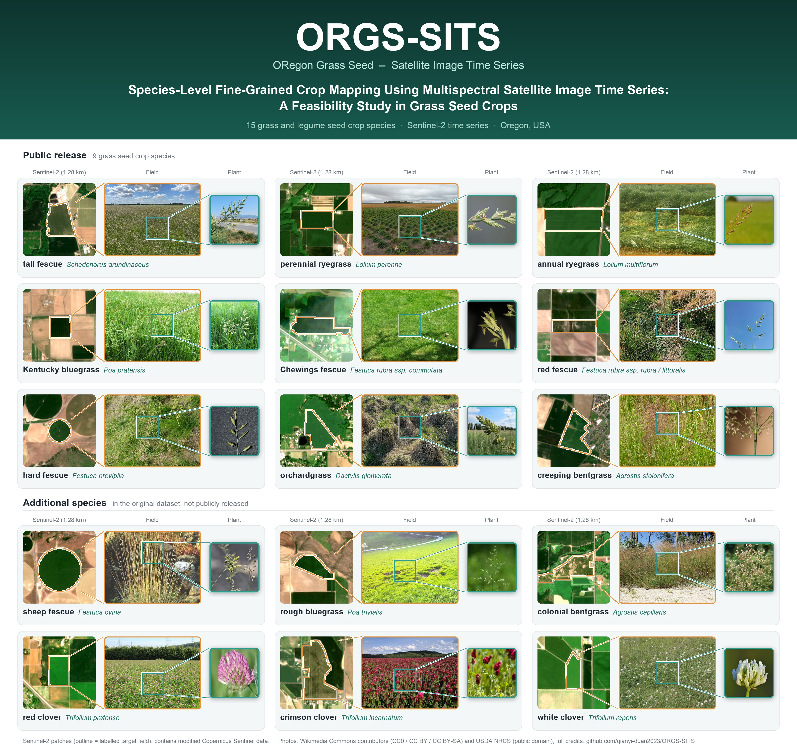
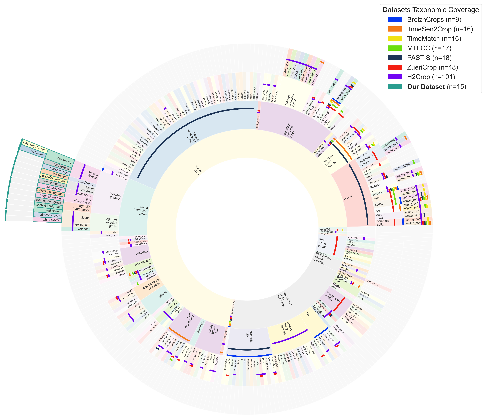
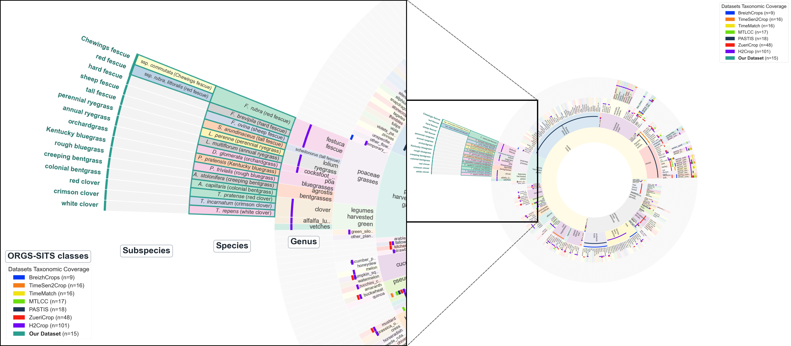
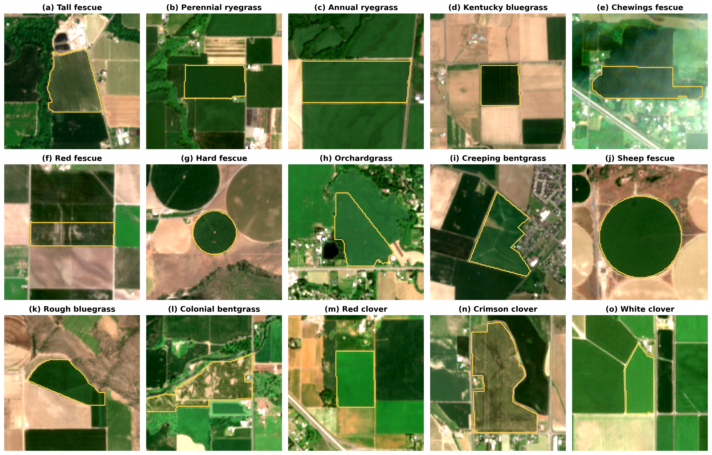

We introduce ORGS-SITS (ORegon Grass Seed – Satellite Image Time Series), a benchmark dataset for species-level fine-grained crop mapping from satellite image time series (SITS), focusing on closely related grass and legume seed crop species. The public release covers nine grass seed crop species. The dataset is designed to support the study of fine-grained crop differentiation under high spectral, phenological, and taxonomic similarity.
To contextualize the granularity of our dataset, we collected class labels from commonly used public crop mapping datasets and benchmarked them within the Hierarchical Crop and Agriculture Taxonomy (HCAT) framework introduced by Schneider et al. (2023).
Existing public crop mapping datasets generally focus on broader crop categories and rarely distinguish among closely related crop species within the same genus. Our dataset extends beyond these conventional crop-category levels by providing species-level annotations.
To our knowledge, this is the first publicly available satellite image time series crop mapping dataset providing species-level annotations across multiple closely related grass and legume seed crop species.

Hover over the figure to magnify details.
The original dataset contains fifteen distinct grass and legume seed crop species. Due to the sensitive and high-value nature of the underlying data, six species cannot be publicly released. The public version of the dataset therefore includes nine species, while the full fifteen-species taxonomy is retained below to illustrate the complete scope and fine-grained structure of the original dataset. Multiple closely related species are represented within the same crop groups, making the dataset particularly suitable for evaluating fine-grained crop classification under high inter-class similarity.
The nine publicly released species are: tall fescue [Schedonorus arundinaceus (Schreb.) Dumort.], perennial ryegrass (Lolium perenne L.), annual ryegrass (Lolium multiflorum Lam.), Kentucky bluegrass (Poa pratensis L.), Chewings fescue [Festuca rubra L. ssp. commutata Gaudin; syn. Festuca rubra L. ssp. fallax (Thuill.) Nyman], red fescue [including strong creeping red fescue (F. rubra L. ssp. rubra Gaudin) and slender creeping red fescue (F. rubra L. ssp. littoralis (G. Mey.) Auquier)], hard fescue (Festuca brevipila Tracey), orchardgrass (Dactylis glomerata L.), and creeping bentgrass (Agrostis stolonifera L.).
In the figures, classes are organized by their scientific names into genus, species, and, where a class is defined below the species level (Festuca rubra), subspecies. Tall fescue is therefore placed in its own genus Schedonorus rather than under the HCAT “festuca_fescue” category.

Click the figure to open the full-resolution image.
Representative Sentinel-2 multispectral satellite imagery examples for the nine publicly released species and three clover species are shown below. Many of these species exhibit highly similar spectral and morphological characteristics, highlighting the difficulty of distinguishing species from satellite observations.

Click the figure to open the full-resolution image.
The manuscript is currently in preparation. A preprint link will be added here after release.
Dataset access information will be added upon public release.
Citation information will be provided after the manuscript becomes publicly available.
We thank the Oregon Seed Certification Service (OSCS) for graciously providing grass seed crop field location and species ground truth data. Such high-quality data laid a critical foundation for our model training and validation. We are particularly grateful to Andy Altishin for his valuable support and coordination in data sharing.
We also thank Aaron Affeldt for his help with dataset annotation.
.jpg){kind=link}


.jpg){kind=link}


_-_Christchurch_Botanic_Gardens_-_Christchurch,_NZ_-_DSC00995.jpg){kind=link}
.jpg){kind=link}


.jpg){kind=link}

.jpg){kind=link}
.jpg){kind=link}


_Trifolium_pratense.jpg){kind=link}